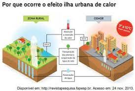

"Ilha de calor é um fenômeno climático urbano caracterizado pela maior temperatura das cidades em relação às áreas vizinhas, como as zonas rurais. Esse aquecimento se dá em função da maior concentração de materiais como asfalto, concreto e superfícies escurecidas, que absorvem mais calor, da poluição, da atividade antrópica, da ausência de vegetação e corpos d’água, além da impermeabilização do solo. Há, com isso, uma piora na qualidade do ar e da água nas cidades, o que é seguido pela ocorrência de doenças associadas e queda na qualidade de vida nessas áreas.
